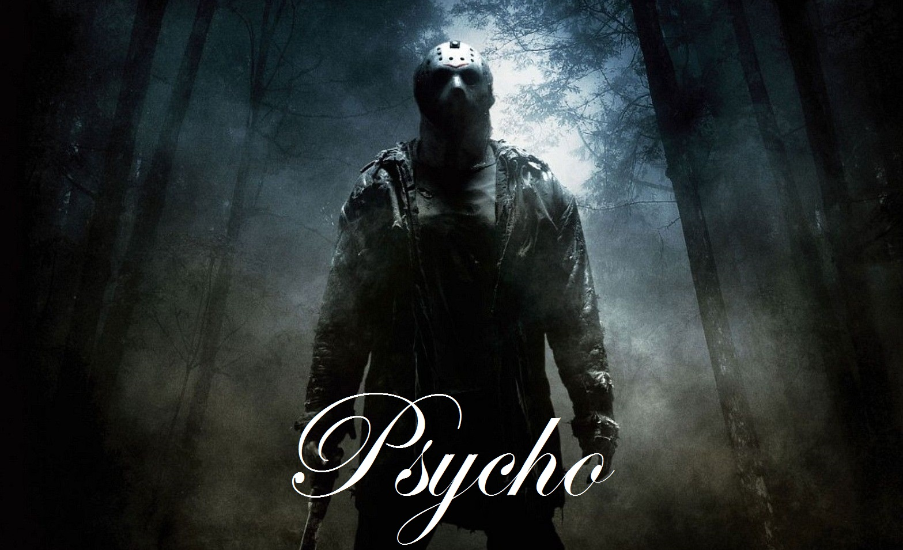

Úvod
Nejdříve bychom vám chtěli říct význam slova psycho, což je duch či duše. Dále pak budeme pokračovat různými šílenými syndromi a později i jinými věcmi.
Munchausenův syndrom
Jde o syndrom, při němž si člověk úmyslně vymýšlí, simuluje, úmyslně si zhoršuje chorobu nebo si sám způsobí schválně zranění a to často v takové míře, že musí být hospitalizován. Cílem je získat péči a pozornost lékaře a ošetřujícího personálu. Tento syndrom byl pojmenován podle německého barona von Munchausena, který byl proslulý fantastickými vymyšlenými historkami o svých cestách. V roce 1951 Richard Asper použil tento termín k označení lidí, kteří cestovali z nemocnice do nemocnice s tím, že si vymýšleli neexistující nemoci. Situace jde mnohdy tak daleko, že se dožadují radikálního operativního zákroku. To byl případ jedné Američanky z Alabamy, která trpěla tímto syndromem. Loni se jí podařilo ošálit lékaře a nechala si provést zcela zbytečně mastektomii. Skončila na psychiatrii.
Cotardův syndrom
Vzácná duševní porucha, při níž se postižený domnívá, že mu chybí nějaký tělesný orgán, případně více orgánů nebo že je dokonce mrtvý. Syndrom byl pojmenován po pařížském neurologovi Julesovi Cotardovi (1840 - 1889), který jej jako první popsal na případu své třiačtyřicetileté pacientky. Ta byla přesvědčena, že jí chybí všechny tělesné orgány, tvrdila, že proto nepotřebuje jíst, že je navěky prokletá a nemůže zemřít přirozenou smrtí. Moderní případ Cotardova syndromu popsali lékaři v roce 1996. Šlo o pacienta, který při motocyklové nehodě utrpěl poranění mozku. Poté, co se vrátil z nemocnice, odcestoval s matkou do jižní Afriky. Tam získal přesvědčení, že je mrtvý a že se dostal do pekla. Lékaři usoudili, že šlo o jev navozený vysokými teplotami, které tam v té době panovaly. Pacient byl přesvědčen, že před tím zemřel na otravu krve, na AIDS nebo na žlutou zimnici.
Capgrasův syndrom
Neurologicky bývá Cotardův syndrom spojován s dalším syndromem - Capgrasovým. Při něm jde o poruchy způsobené špatným nebo neexistujícím spojením mezi dvěma mozkovými oblastmi. Té, která poznává a rozlišuje obličeje, a částí mozku, která spojuje pocity a city s tímto poznáním (amygdala a další limbické systémy). Toto špatné propojení působí, že známý obličej pokládá postižený za obličej dvojníka, který byl navíc záměrně nastražen. To v případě, že jde o obličej známého nebo člena rodiny. Pokud jde o vlastní obličej postiženého, jeví se mu v zrcadle zcela bez emocí, a proto se pokládá za mrtvého, což jsou vlastně příznaky Cotardova syndromu. Jak už bylo řečeno, oba syndromy spolu často úzce souvisejí a léčení obou je velmi obtížné. Capgrasův syndrom poprvé popsali v roce 1923 francouzští psychiatři Joseph Capgras, po kterém byl pojmenován, a Jean Rebout-Lachaux.
Fregoliho syndrom
V tomto případě se postižený domnívá, že různí lidé jsou ve skutečnosti jedna a táž osoba, která si záměrně mění vzezření, aby byla v utajení. Syndrom může vzniknout vlivem mozkových lézí a nabývá často paranoidních forem. Postižený věří, že je pronásledován přestrojenou osobou nebo osobami. Syndrom byl pojmenován podle italského umělce převleků Leopolda Fregoliho, který žil v devatenáctém století. Někteří nemocní vykazují rysy jak Fregoliho, tak Capgrasova syndromu. Poprvé byl syndrom popsán v roce 1927.
Stendhalův syndrom
Pojmenování získal podle francouzského spisovatele Stendhala, který v roce 1817 navštívil Florencii a byl její krásou tak uchvácen, že dostal málem fyzický kolaps. Psychiatři se setkávají s řadou podobných případů, kdy silný zážitek z nějakého uměleckého díla nebo nádherné přírodní scenérie vede k prudkému zrychlení srdeční činnosti, k nevolnosti, neorientovanosti a někdy až k halucinacím. Syndrom byl popsán až v roce 1979 italskou psychiatričkou Graziellou Magheriniovou, která se s mnoha podobnými případy u návštěvníků Florencie ve své praxi setkala.
Stockholmský syndrom
Označuje se tak psychická závislost a někdy i citový vztah unesené oběti k únosci bez ohledu na to, jak krutě s obětí únosce zachází či v jakých podmínkách ji drží. Syndrom byl pojmenován podle švédské metropole Stockholm, kde bankovní lupiči přepadli banku a drželi v ní rukojmí od 23. do 28. srpna 1973. V tomto případě byly oběti citově přitahovány k věznitelům a bránili je i poté, co byli po šesti dnech policií ze zajetí vysvobozeny. Termín Stockholmský syndrom začal používat a prosazovat kriminolog a psychiatr Nils Bejerot, který asistoval stockholmské polici při řešení tohoto případu a při osvobozování rukojmí. Poprvé jej použil v rozhlasovém vysílání o průběhu zásahu.
Jeruzalémský syndrom
Název dostal podle města Jeruzalém. Označuje se tak skupina psychických příznaků, které jsou vyvolány návštěvou tohoto svatého města. Jde většinou o kompilaci obsesivních, mylných a jiných psychóz. Tento syndrom zažívají jak křesťané, tak židé nejrůznějšího vzdělání a sociálního zázemí. Syndrom se projeví tak, že osoba, která se až do té doby zdála naprosto vyvážená, začne mít psychické problémy, mylné či obsesivní představy. Někdy problém zmizí po několika týdnech či po odjezdu z oblasti.
Syndrom poprvé klinicky popsal jeruzalémský psychiatr Heinz Herman v třicátých letech minulého století. Podobný syndrom vyvolávají i jiná posvátná místa, například křesťanský Řím nebo islámská Mekka a podobá se už uvedenému Stendhalovu syndromu vyvolanému krásou Florencie. Jeruzalémskému syndromu byla ale věnována největší pozornost jak v lékařských, tak v literárních dílech či filmovém zpracování.
Postižené osoby se začnou při návštěvě Jeruzaléma pokládat za nějakou náboženskou postavu z křesťanské nebo židovské historie, mnohdy se převtělí do samotného Ježíše Krista, ale může to být i některý z apoštolů a podobně nebo jsou ovlivněny nějakou náboženskou událostí. Dostávají se do extáze, jsou nervózní a úzkostní a mají spoustu netypických reakcí. Někteří mají nutkavou potřebu se neustále mýt a stříhat si nehty, aby byli dokonale čistí, zpívají nahlas biblické žalmy, recitují bibli, na posvátných místech skládají hlasitě exaltované náboženské přísahy, většinou velmi zmatené. Někteří se oblékají do bílého dlouhého oděvu obvykle vytvořeného z prostěradla, které si omotají kolem těla, a vystupují jako Kristus. Počet osob postižených tímto syndromem byl nejvyšší v přelomových letech 2000/2001